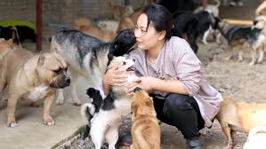

With the help of animal shelters, these animals can find homes. If you are in the market for a new pet or you find yourself in a situation where you are unable to keep your pet anymore, here are a few reasons you should choose an animal shelter:
If you are in search of a family-friendly pet, check your shelter first. Many shelters have puppies and kittens but you may find that your heart opens up to an older animal. When you choose to adopt an animal for a local shelter, you can be guaranteed that your animal has been monitored and checked out by a veterinarian before you take them home. Animal shelters try to ensure that pets have received their shots and many dogs and cats will have already been spayed and neutered. Additionally, pets who have been given to the animal shelter from previous homes are more likely to have been exposed to children.
